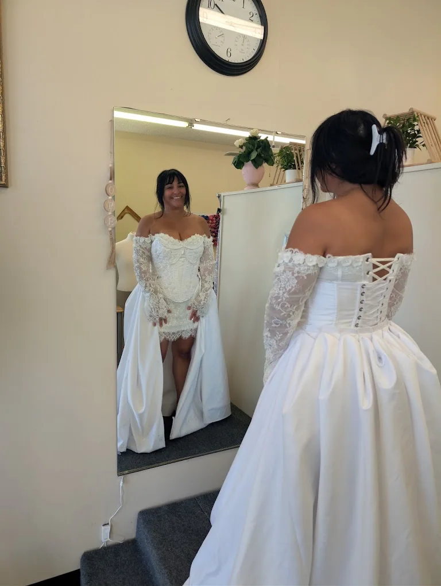
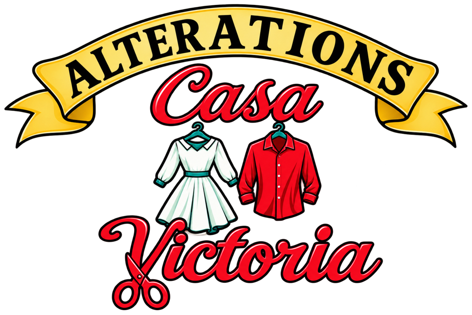
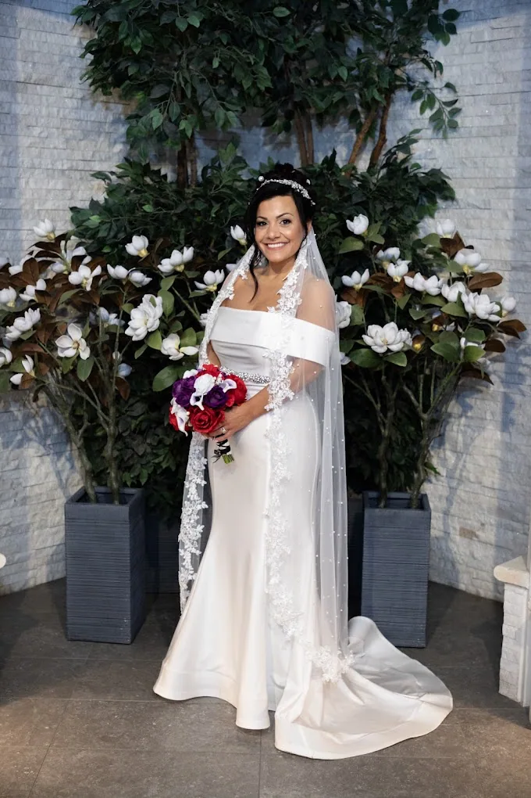
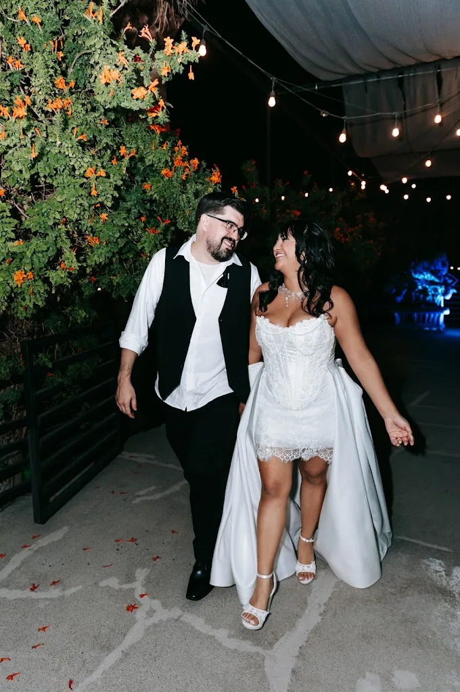
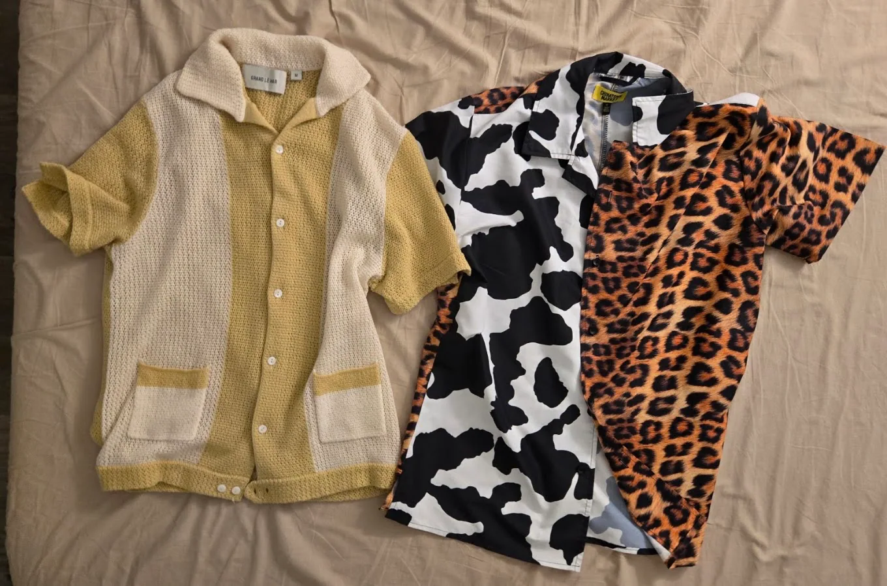
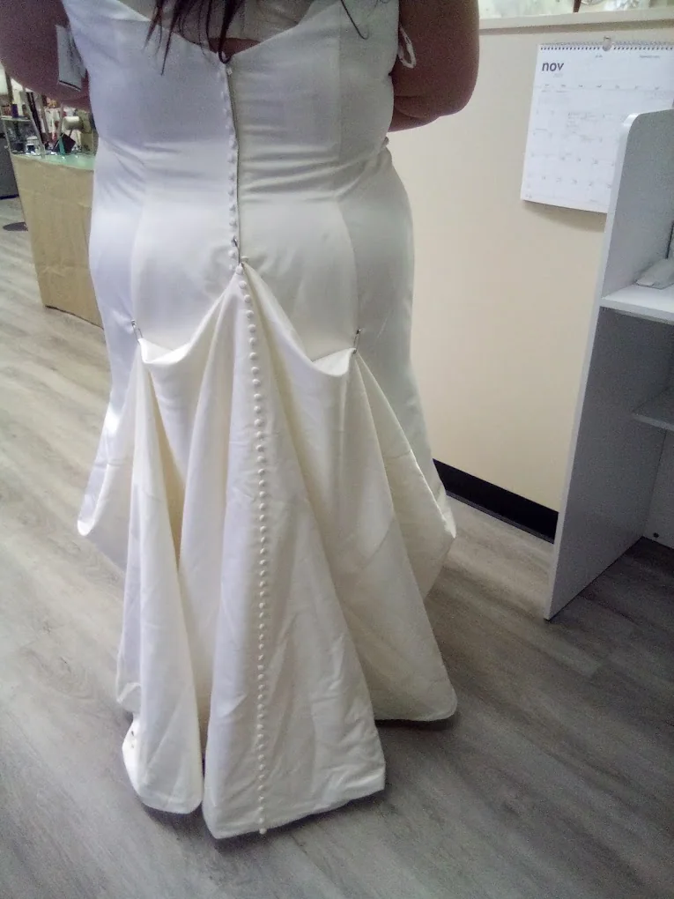
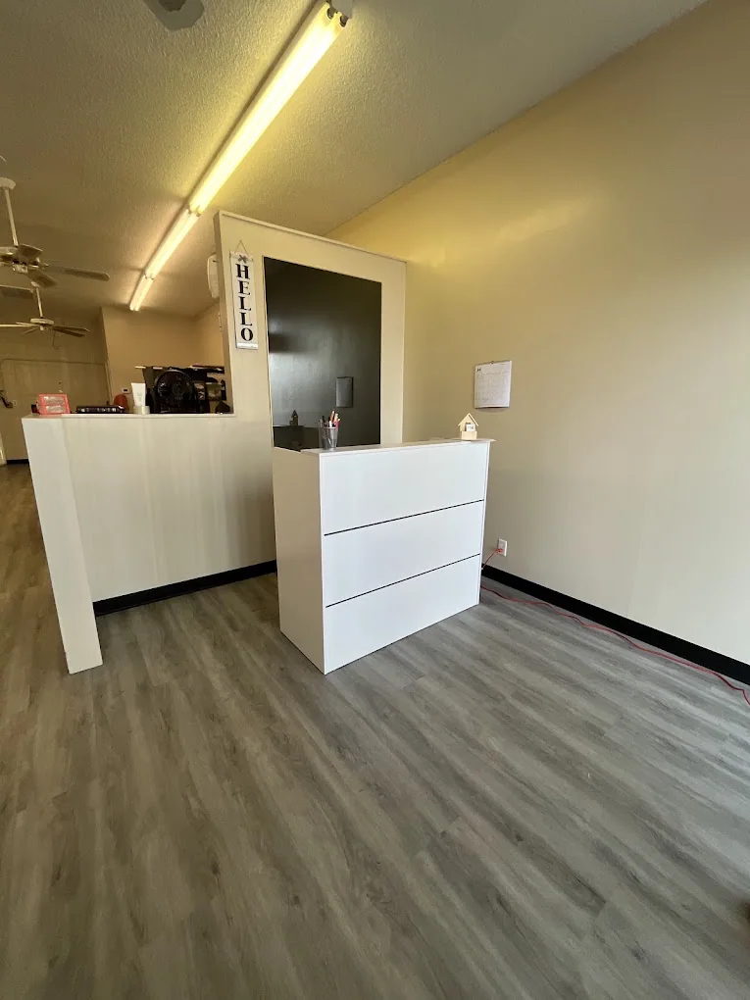

01 / BRIDAL
Bridal Alterations
Fit adjustments and dress refinements for your special day.
Ask About Bridal
Call the StudioFrom special-occasion looks to pieces you reach for every day, thoughtful alterations help you feel your best in what you wear.

Located on West Charleston Boulevard in Las Vegas, Alterations Casa-Victoria is a local alterations studio for the outfits that matter to you.
Whether you're preparing for a big celebration or refreshing the fit of a favorite piece, reach out to discuss what you need.
Find Our StudioExplore common alteration needs. Call to confirm your garment, timing, and availability.

Fit adjustments and dress refinements for your special day.
Ask About Bridal
Alteration inquiries for event outfits, dresses, and suits.
Ask About Formalwear
Discuss hems, sizing adjustments, and alterations to favorite pieces.
Ask About AlterationsSpecific services, pricing, and turnaround times are confirmed directly with the studio.

The right fit can transform the way a garment feels. We believe your outfit should complement the moment—not distract from it.
Have a wedding, event, or special outfit coming up? Tell the studio what you're planning and ask about fitting options.
Talk With UsExplore a selection of studio and garment photos. Select any image for a closer view.
Photographs provided for this website; client approval for public display should be confirmed.
Read feedback from visitors who have brought their treasured garments to Alterations Casa-Victoria.
Customers describe detailed wedding-gown alterations and careful handling of meaningful dresses.
Feedback highlights precision fitting, resizing, suit tailoring, and garment repairs.
Reviews mention timely alterations for special events, with lead times varying by project.
These are summaries of publicly available review themes, not direct testimonials. Visit Google to read each review in full.
A few answers to help you plan your visit.
We're located at 2202 W Charleston Blvd, Las Vegas, NV 89102.
Monday through Friday, 10:00 AM to 6:00 PM. Closed Saturday and Sunday. Call ahead to confirm holiday hours.
Yes. Call (702) 994-1629 to discuss your wedding gown and confirm fitting availability.
Prices vary depending on the garment and work required. Please call the studio for pricing information.
Appointment requirements have not been confirmed. We recommend calling before visiting.

Have a garment that needs attention? Give us a call or stop by during our listed business hours.
Stay connected.
Find our listing on Google, or search for us on your favorite review and social platforms.
Instagram, Facebook, and Yelp links open searches; official business profiles have not yet been verified.